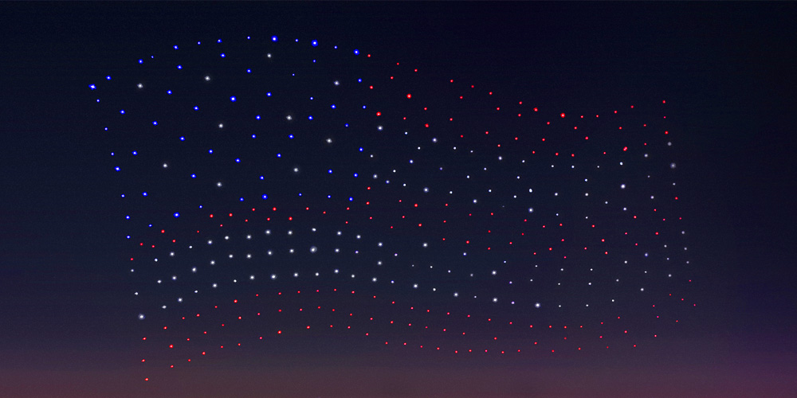
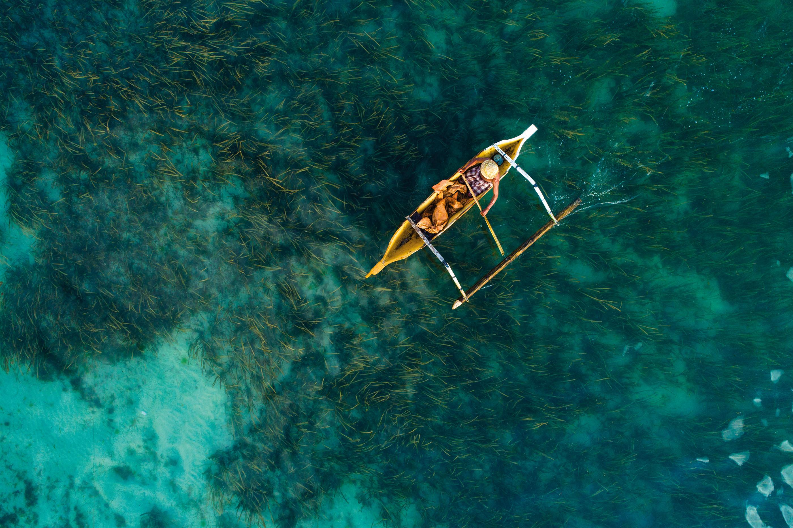
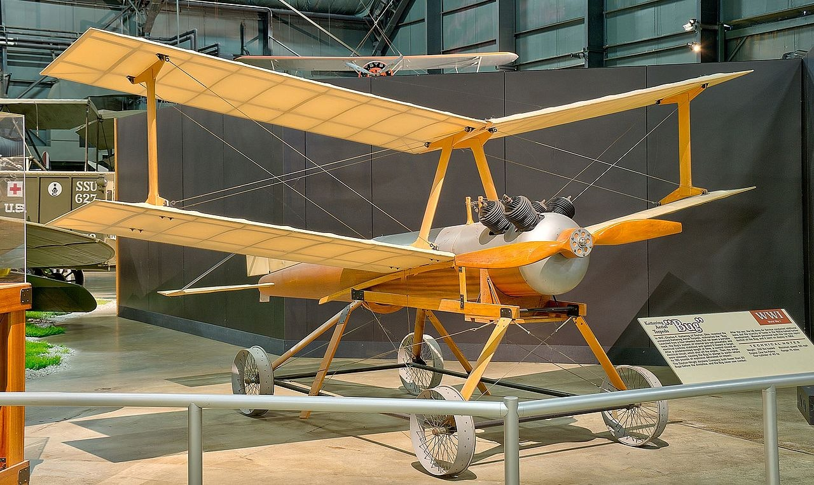
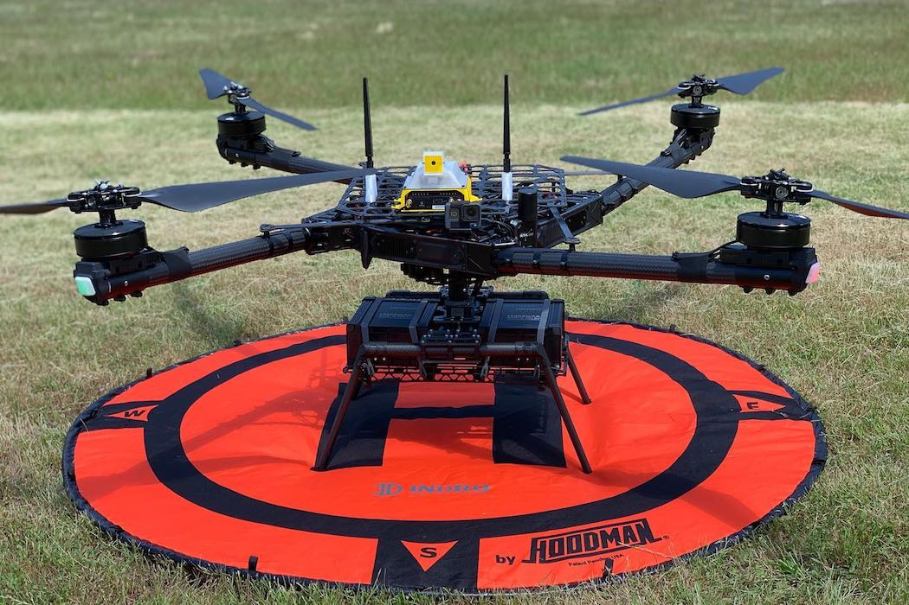
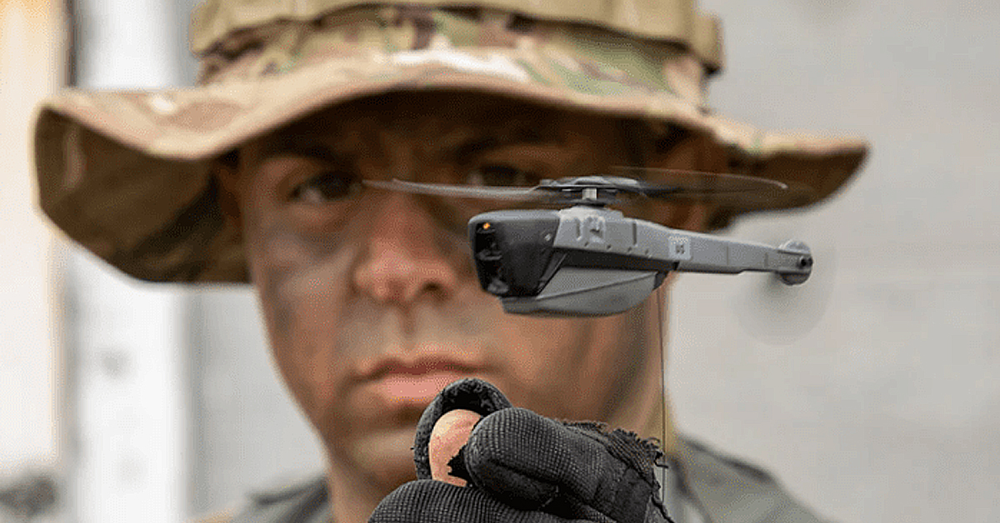

Drones are a story-building sector of technology, adequate of capturing astounding video in the hands of proficient
pilots and contributing some meaningful internet entertainment when a dog mistakes one for a frisbee. We’ve followed
drones achieve successful Super Bowl light shows and observed as they offer media reports and assistance
in the wake of calamitous hurricanes.
In aeronautics a drone refers to an emasculated ariel automobile/ unmanned aerial vehicle (UAV).
It is a flying robot which is controlled remotely or fly freely using a software-controlled trip plans in
their installed system, working on sensors. It was formerly developed for the military and aerospace
corporation, they have found their way to the life of commons because of the boosted safety and efficiency they provide.

Different types of drones can travel different heights and distances. The short-ranged drones
can travel approximately 90 miles and are mainly used for intelligence collection. The
longest ranged drones are called endurance UAVs as they have capability to travel farther
than 400 miles range and up to 3000 feet in the atmosphere.
As drones can be controlled remotely, they are excellent to take on some of the hardest/ vigorous jobs. They have
moved into our houses and provide entertainment and as a crucial tool for photographers.
The word “drone” has several different meanings, and it originates from the old English
word drān, drǣn, which means ‘male bee’. When talked of a drone it is
thought as an electric aircraft controlled remotely. The best example of a drone for commercial use can be
DJI Mavic 2 Pro.
Drone
History

The first UAV in history was seen in 1839, Austrian soldiers attacked city of Venice
with unmanned hydrogen filled balloons armed with arsenal. Some of these balloons were victorious but plenty of them flew
back to Austrian towns and bombed them due to which it was not universally practiced.
The first unmanned automobile was developed during world war I by Britain and USA.
Britain’s first test conducted was in March 1917 for a small radio-controlled aircraft called Aerial Target whereas in
October 1918 an aerial torpedo called Kettering Bug of America flew for the first time. Even though both countries
achieved triumph in their flight tests neither of them was practically used in war.
The first broadly used drone was seen in 1935 as a full-size reassembling of the de Havilland DH82B “Queen Bee”
biplane which was equipped with a radio and a servo-operated controls in the back seat. This plane could traditionally
driven from the front seat but mostly flew unmanned and was shot by soldiers during.
Working

It especially composed of multi propeller system inside a drone that makes this device highly
autonomous and assists in devaluation of failures. Important thing is that this multi propeller system
is that even if any motor inside this device stops working; it will keep on flying as it gets support from
propellers that are working in group. Drones that possess large number of motors inside can gain more control over
their elevation and hence can carry more loads during flight. These propellers get their power from a dedicated
source and most of these devices contain removable batteries so that it can stay in air for long run. The flight
time can be extended with use of powerful batteries in design.
Controller plays an important role in drone flying mechanism. This device is used by experts for
controlling every movement of drone, ranging from its launching, navigation abilities and even up to landing.
Market is flooded with variety of controllers these days and developers often use to do various experiments to create
drones with impressive features.
Uses
The visionary innovator Nikola Tesla became the first to apprehend the forthcoming of emasculated automobiles.
Today there are vast utilization of drones at present-day. A few are listed below:
Military

Perhaps the primeval and most notable use of drone is in military. The militaries of U.S. and
British initiated use of very basic model of drones in early 1940’s to scout on the
Axis powers. Present day drones are leading-edge than the UAVs of previous years which is equipped
with thermal imaging, laser range finder and even tools to perform airstrike. They are used as decoys to
conduct military missions. UAV’s will continue to be applied various military operations due to their high
accessibility in reducing losses and enabling the execution of high profit and time-sensitive mission.
Saving Lives
They are capable of delivering medical supplies in backcountry or dominating the way for
early reactors during a avalanche recovery, they are efficient to transport precious goods
from one point to another. In a report it is seen that in previous years they have rescued at least 59
lives from lethal condition in 18 different conditions around the world. They can help by analysing
frameworks such as bridges, buildings, towers as they are dangerous tasks. Architects has been put to harm
because of their job because there’s no other way to reach a vantage point that’s useful enough.
Delivery
Delivery drones are usually self-governing UAV’s that are used to shipping food or goods to your
front stairs. They are known as “last mile” delivery drones as they are used to make
deliveries from stores or warehouses nearby. Wholesalers are shifting towards drones as they are more
productive substitute for delivery instead of counting of delivery motorist with ineffectual trucks.
They can carry an extraordinary weight of up to 25 kg of goods. Delivery through drones is
still being tested at different levels.
Pros
Quality Aerial Imaging
Drones are excellent for taking high-quality aerial photographs and video, and collecting
vast amounts of imaging data. These high-resolution images can be used tocreate 3D maps and
interactive 3D models, which have many beneficial uses. For example, 3D mapping of disaster areas can enable
rescue teams to be better prepared before entering hazardous situations.
Security
Another plus to drone use centers on security. With the appropriate license, operators can use
unmanned aerial vehicles to provide security and surveillance to private companies, sporting events,
public gatherings, and other venues. Drones can also gather valuable data during and after
natural disasters to aid in security and recovery efforts.
Precision

Since unmanned aerial vehicles use GPS (the Global Positioning System), they can be
programmed and maneuvered accurately to precise locations. This is especially helpful in a variety of
situations. In precision agriculture, for example, UAVs are used for a variety of farming needs, such as
spraying fertilizer and insecticide, identifying weed infestations, and monitoring crop health. The
precision of UAVs saves farmers both time and cost.
Cons
Legislative Uncertainty
Since the widespread use of unmanned aerial vehicles is relatively new, legislation is still catching
up. The Federal Aviation Administration (FAA) has established certain rules for small,
unmanned aircraft that apply to commercial and recreational use, but there are still ambiguities. Questions
include how best to determine airspace property rights and protect landowners from aerial trespassing
. Further adding to the confusion are conflicts between federal regulations and some state and local laws.
Saftey
Safety is a primary concern when dealing with unmanned aerial vehicles. To avoid mid-air collisions,
UAVs must be programmed with “sense and avoid” capabilities that match those of manned aircraft.
This means that drones must be able to detect a potential collision and maneuver to safety.
In the event of system failures, falling drones are another serious danger, especially when they are used near
large crowds or in highly populated areas.
Privacy
One of the most common concerns from the public about UAVs is privacy. Drones can collect data and images
without drawing attention . This can occur if government entities were to use drones to monitor
the public.